AI agent interface components for Rust
Everything an AI app needs on screen: streaming Markdown chat, prompt inputs with attachments, reasoning and chain-of-thought panels, tool calls with live arguments, approvals, diff review, traces, agent trees, run monitors, cost and context meters, voice orbs and MCP server managers. Pair them with glowkit-stream to drive them from a real AG-UI, Vercel AI SDK, ACP, rig or OpenAI-compatible stream.
All AI components
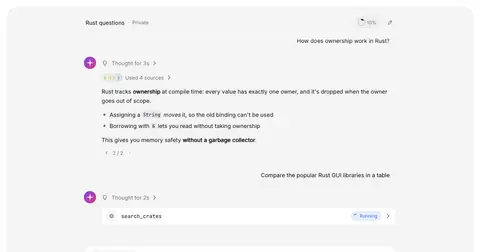
AI Chat
AIA complete, working chat: type a message and a simulated assistant thinks, calls a tool, cites sources and streams a Markdown answer.
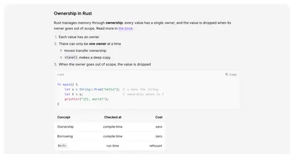
Markdown
AIStreaming-safe Markdown: headings, lists, tables, quotes, links and highlighted code blocks with a copy button.
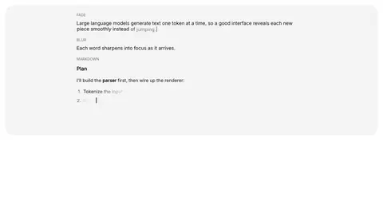
Streaming Response
AIReveals a response token by token with a per-token fade and a blinking caret; works for plain text or live Markdown.
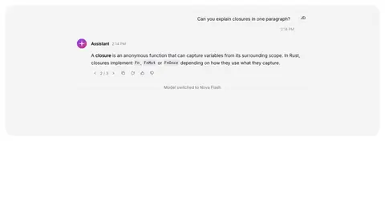
Chat Message
AIUser bubbles on the right, assistant answers on the left with an avatar, hover-revealed actions and a branch switcher.
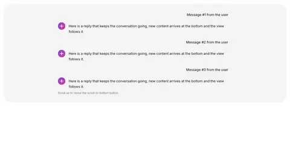
Conversation
AIA scroll area that sticks to the bottom as messages stream in; scroll up and a floating button glides you back down.
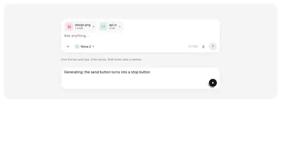
Prompt Input
AIAn auto-growing composer with attachment chips, model pill, character count, mic, and a send button that becomes stop while generating.
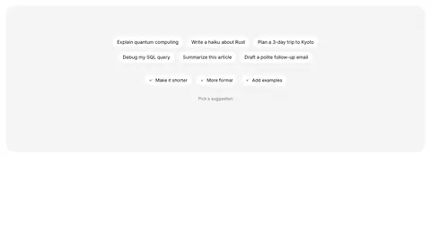
Suggestions
AIRounded prompt suggestion chips that wrap, lift slightly and highlight on hover.
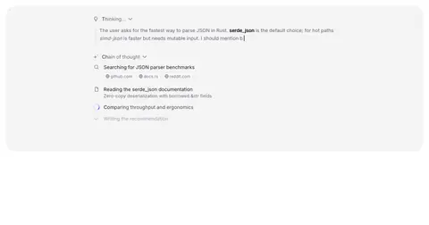
Reasoning & Chain of Thought
AIA collapsible "Thinking…" block that shimmers while streaming and folds to "Thought for 4s", plus a step timeline with icons and connectors.

Tool Call
AIA card for function calls: tool name, status badge (pending, running with spinner, completed, error) and collapsible parameters and result.
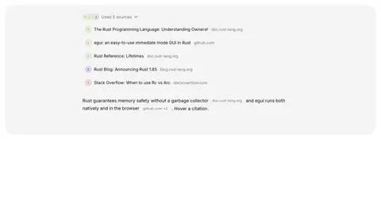
Sources & Citations
AI"Used 5 sources" with stacked favicons that expands into links, and inline citation pills with hover cards.
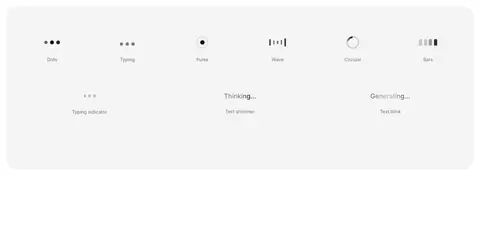
AI Loaders
AITyping indicator and loader variants for model activity: dots, typing, pulse, wave, circular, bars, text shimmer and text blink.
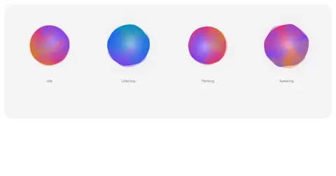
Voice Orb
AIAn organic glowing orb for voice agents that breathes when idle and swells with the audio level when listening or speaking.
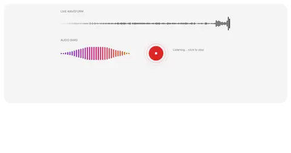
Waveform & Voice Button
AIA scrolling live waveform for recording, mirrored audio bars, and a mic button with pulsing rings while listening.
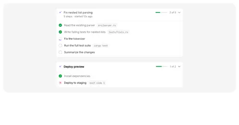
Task List / Plan
AIAn agent's plan as a collapsible checklist: items go from pending to a spinner to a check that pops in, with a progress count.

Context Meter
AIToken usage of the model's context window as a compact ring with a hover breakdown, or a segmented bar with legend and cost.
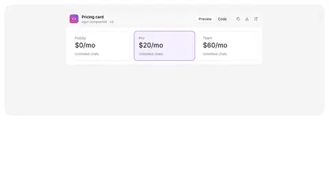
Artifact
AIA titled panel for generated output with segmented Preview / Code tabs and action buttons.
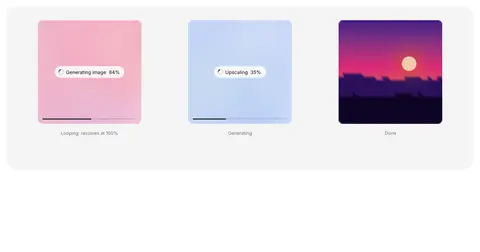
Image Generation
AIA shimmering, slowly shifting gradient placeholder with progress that resolves into the generated image.
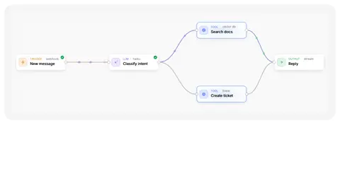
Agent Workflow
AIA node graph for agent pipelines: trigger, LLM, tool and output nodes joined by bezier edges with data flowing along them.
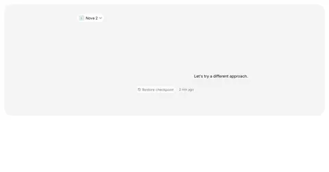
Model Selector & Checkpoint
AIA model picker pill with provider badges and a dropdown, plus a "Restore checkpoint" conversation divider.
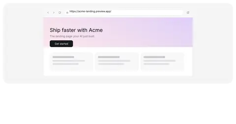
Web Preview
AIA browser-like frame for generated web apps: navigation buttons, an editable address bar and a content panel.
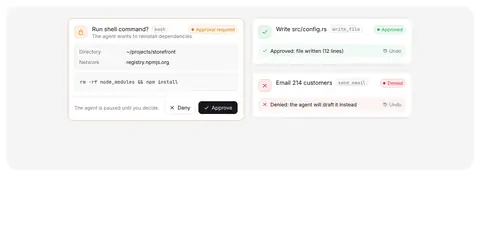
Confirmation
AIA tool-approval card: the agent pauses and shows exactly what it wants to run, with Deny / Approve and compact resolved states.
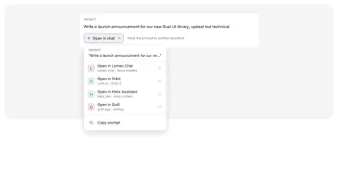
Open In Chat
AIA dropdown button that hands the current prompt to another chat app, with provider badges, hints and a copy row.
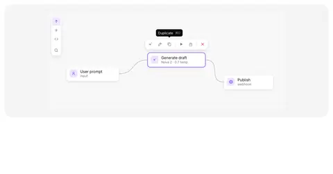
Toolbar
AIA floating icon toolbar for canvases and nodes, with dividers, toggled states, and quick tooltips with shortcut hints.
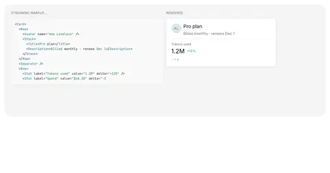
JSX Preview
AIGenerative UI: streamed JSX-like markup is parsed on every frame (half-written tags and all) and rendered into real themed widgets that fade in.
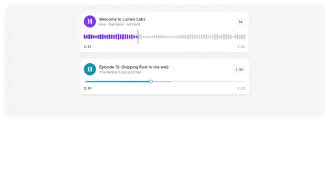
Audio Player
AIAn audio player card with a scrubbable waveform, play / pause, elapsed time and a speed pill, plus a compact scrub-bar variant.
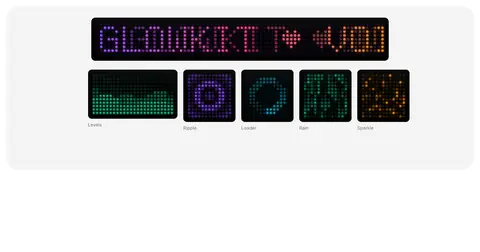
Dot Matrix
AIAn LED dot-matrix display with glowing dots and phosphor afterglow: scrolling pixel text, live level bars and animated patterns.
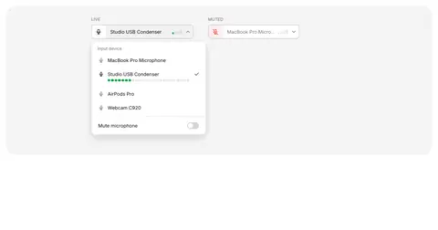
Mic Selector
AIA microphone picker with a live level meter, a device dropdown with a full segmented meter, and a mute toggle.

Speech Input
AIA dictate button that springs open into a live waveform with a timer and streaming interim transcript, then shows the final text.
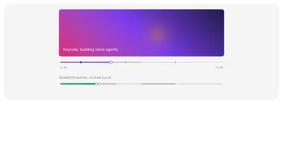
Scrub Bar
AIA media timeline scrubber with buffered and played ranges, a hover time tooltip, chapter markers and a thumb that grows on hover.
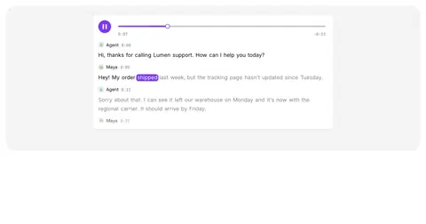
Transcript Viewer
AIA transcript synced to playback: the current word rides an accent pill that glides along, spoken words brighten, and clicking any word seeks.
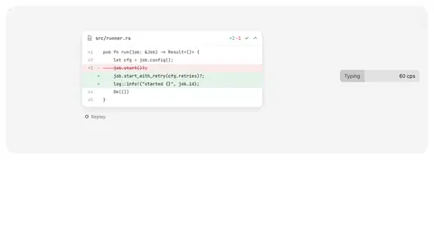
File Diff
AIAn agent's file change: the header springs open into the diff, removed lines strike through and added lines type themselves in, then the check lights up.
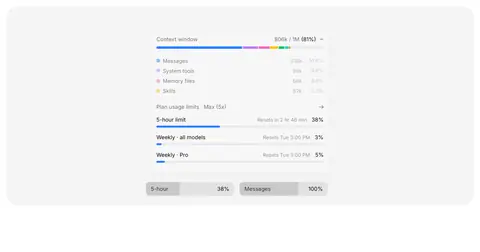
Agent Limits Card
AIA context-window bar segmented by token bucket plus plan limits with reset times; clicking the header grows the card to reveal the per-bucket breakdown.
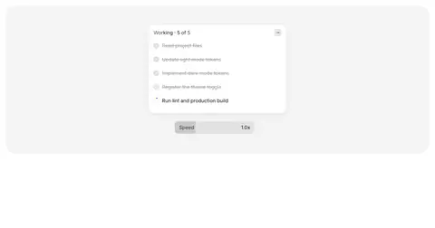
Agent Progress
AIA collapsible multi-step progress block: steps stagger in, the active one spins a ring synced to its progress, done steps check off with a strikethrough.
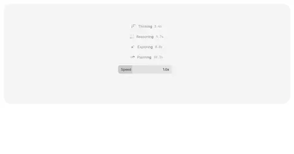
Agent Thinking
AIFour thinking indicators (dot wave, dot spin, stars, infinity comet), each with a shimmering label and an elapsed timer.
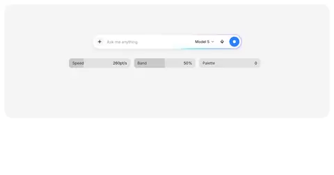
Composer Loader
AIA chat composer whose rim carries an iridescent band at constant speed, led by a crisp line with a soft bloom bleeding inward; press send to toggle.
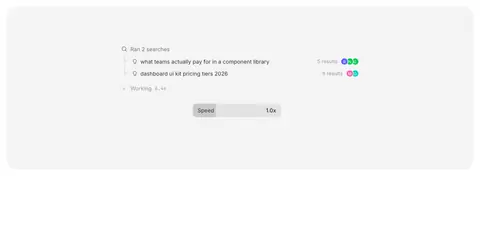
Web Search
AIAn agent's research trail: queries and opened pages hung off a curved guide, with result counts and overlapping site marks, streaming in under a shimmering Working timer.
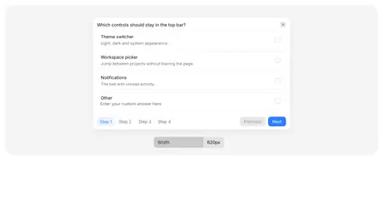
Questionnaire
AIQuestions an agent asks before committing to a plan: bordered answer rows with checkboxes or number keys, an Other field, step pills, and slides between questions.

Agent Tree
AIAn orchestrator and its sub-agents as a live tree of cards: status, model, task, cost and time on each, lights running along connectors to working agents, branches that fold.
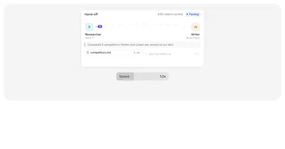
Handoff Card
AIA relay hand-off between two agents: a baton travels the track, the receiver lights up, and the context that went along drops in while what got lost is struck through.

Trace Waterfall
AIA run's trace as a waterfall: summary strip, folding span tree, bars by kind on a time axis with duration and cost, the slowest call tagged, a live now-line and hover details.
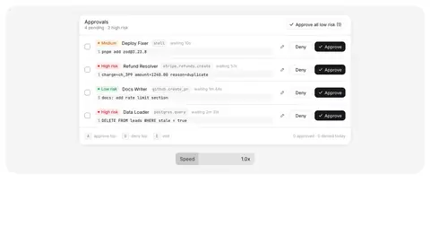
Approval Queue
AIPending tool calls to approve, deny or edit, with risk badges, the exact command, waiting time, batch actions and rows that resolve and fold away.

Diff Review
AIAn agent's file changes for review: unified or side-by-side diff, per-hunk accept and reject that fold the hunk, J/K/Y/N keys, and an apply footer.

Run Monitor
AILive agent runs in one table: filter tabs with rolling counts, status, step progress, ticking elapsed time, tokens and a cost sparkline; rows glide as runs change state.

Run Timeline
AIAn agent run as a quiet trail of steps: tool calls with live spinners, finished steps that fold, a failed step with its error and Retry, and a light running down the rail.
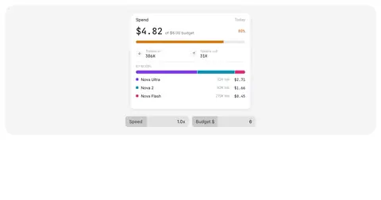
Cost Meter
AISpend against a budget: a big gliding total, a budget bar that turns amber and then red with a pulsing over-limit tag, tokens in and out, and spend split by model.
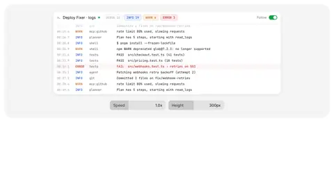
Log Stream
AILive tailing logs: level filter chips with counts, a Follow switch, lines that slide in with a highlight, and a Jump to latest pill when you scroll back.
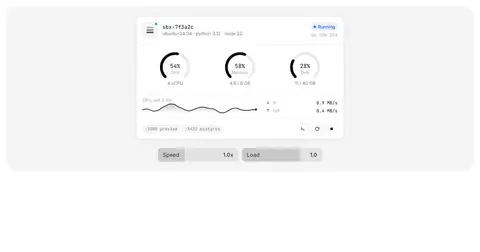
Sandbox Status
AIThe container an agent works in: state, uptime, gliding CPU, memory and disk gauges that warn past 75%, a CPU sparkline, network, ports and actions.
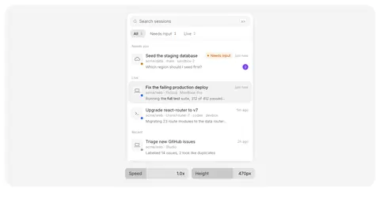
Agent Session List
AIAgent sessions across laptops, cloud sandboxes, CLIs and phones: live, idle and needs-input states, unread pills, search and tabs, rows gliding between sections.
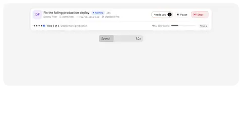
Session Detail Header
AIThe control bar of one agent session: title, repo, branch and device, live state and clock, step pips, token budget, a Needs-you pill, Pause and a hold-to-stop kill switch.
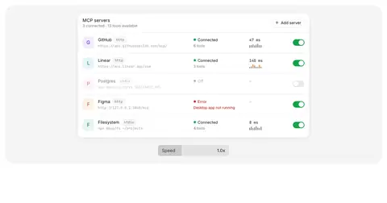
MCP Server List
AIMCP servers with connect status, transport, tool counts, latency bars and switches; switching one on plays a handshake, rows unfold to their tools.
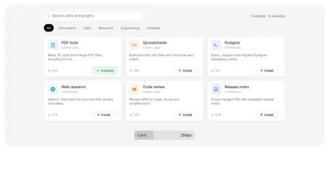
Skills Browser
AIAgent skills and plugins as cards with search and category tabs; Install fills across the button and morphs into Installed, which offers Remove on hover.
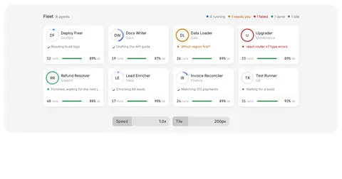
Agent Fleet Grid
AIMany agents as tiles with status rings: progress arcs with a glowing head while working, a pulsing amber ring when one needs you, red on failure, plus runs and success rate.
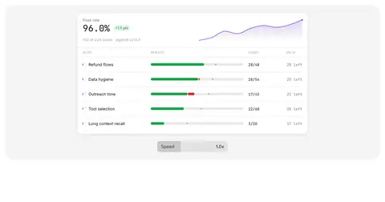
Eval Scoreboard
AIAn eval report: overall pass rate with its delta and trend, suites as stacked pass / flaky / fail bars that grow as cases finish, and regressions tagged.

Memory Viewer
AIWhat an agent remembers: kind badges, source, a recency dot that cools with age, confidence bars, pins that float to the top and new memories sliding in.
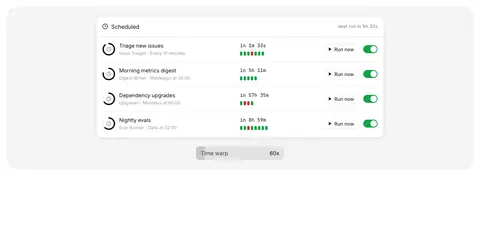
Schedule List
AIScheduled agent jobs with countdown rings, ticking next-run times, pips for recent outcomes, Run now and on/off switches; jobs fire and record their result.
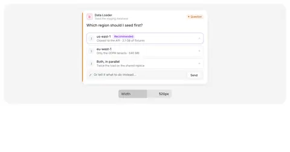
Human-in-the-Loop Prompt
AIAn agent asks a question in its own card: numbered options with one Recommended, a row for your own words, 1-9 keys, and a morph into a one-line receipt with Undo.
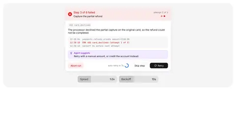
Error Recovery Card
AIA failed step waiting for you: error code and message, attempt pips, last log lines, the agent's suggested fix, Retry / Skip / Abort and an auto-retry countdown ring.

Plan Board
AIAn agent's plan as a four-column board: step cards with agent, tool and live progress lift and glide from Planned to Running to Review to Done.
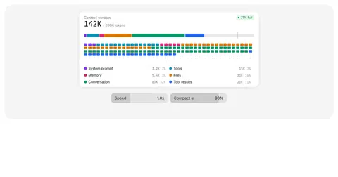
Context Window
AIWhat fills the model's context: a stacked bar by source with the auto-compact mark and a field of cells; hover a source to light it up, watch compaction squeeze the chat.

Assistant Thread
AIA branching chat thread: streaming Markdown replies, regenerate with a reply picker, and inline edit-and-resend that forks the conversation.
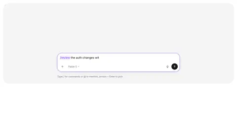
Smart Composer
AIAgent composer with @mentions and /slash-command menus that filter as you type, highlighted inline tokens and a waking send button.

Attachments & Context
AIDrag files onto the composer (a marching dashed drop zone), staged files with upload rings, and removable context chips.
Thread List Sidebar
AIConversation sidebar with search highlighting, pinned and date groups, inline rename and a collapsible archive.
Welcome Suggestions
AIThe empty state: a glowing mark, greeting, staggered starter cards that lift on hover, and the composer.
Copilot Sidebar
AIA docked assistant panel that springs in from the right edge, pushing (or overlaying) the app, with a live chat inside.
Copilot Popup
AIA floating launcher whose sparkle morphs into a cross as a chat window springs out of the corner.
Inline Suggestion
AIGhost-text autocomplete: a muted continuation fades in after a pause with a Tab hint; Tab accepts with a soft flash.
Selection Ask AI
AISelect text to pop a floating Ask AI toolbar; quick actions stream an answer card under the selection.

Agent Mode Switcher
AIAsk / Agent / Plan segmented switch: a tinted pill glides between modes and the description slides along.
Model Picker (rich)
AIA model popover with search, provider marks, speed bolts, cost, context-window chips and capability tags.
Usage Limit Banner
AIA quota banner whose tone morphs from calm to amber to red, with a segmented meter, reset timer and upgrade shine.
Citations Footer
AIAnswer text with numbered citation pills and a Sources footer that expands into cards; hovering links both.
Voice Mode Overlay
AIA voice conversation overlay that grows out of the mic button: living orb, shimmering status, live captions and call controls.
Data Table Result
AIA tool result as a sortable data table: rows slide in, numbers align, deltas are colored pills.

Chart Result
AIThe agent answers with a chart card: headline value, change pill and an animated area, line or bar chart.
Link Preview Result
AIUnfurled links as cards: cover image with a slow hover zoom, favicon and domain, title and description.

Image Gallery Result
AIImage results as a hero-plus-grid gallery with shimmer loading, +N tile and a lightbox that grows from the tile.
Weather Card
AIA generative weather card: condition-tinted sky, animated painted glyph, counting temperature and an hourly curve.
Form Result (HITL)
AIThe agent pauses for details: text, segmented choice and switch fields, then folds into a receipt on submit.
Option List Result
AIThe agent asks you to pick one or many options; confirming collapses the list to the chosen rows.
Plan Result
AIA live to-do plan: progress bar, spinning active step with detail, self-drawing checks as steps finish.
Progress Steps
AIA horizontal tracker of an agent's phases: a gliding rail, pulsing current node and checks as phases complete.
Code Result
AIGenerated code with a Run button: a console slides open and output streams in, ending with an exit chip.
Location Result
AIA painted map with a self-drawing route, bouncing pin and a place list that moves the pin on hover.
Live agent stream
AIA recorded agent run replayed through the real stream reducer: reasoning, streamed Markdown, tool calls with live arguments, an approval, a plan and an error. Switch between AG-UI, Vercel AI SDK and ACP-style sources.